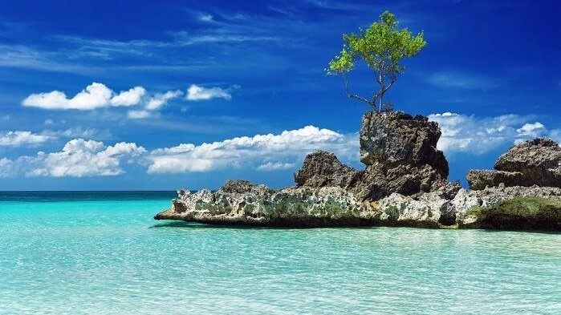
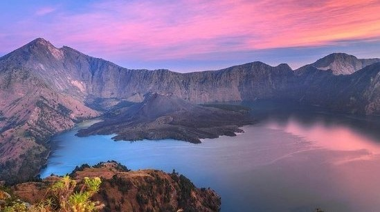
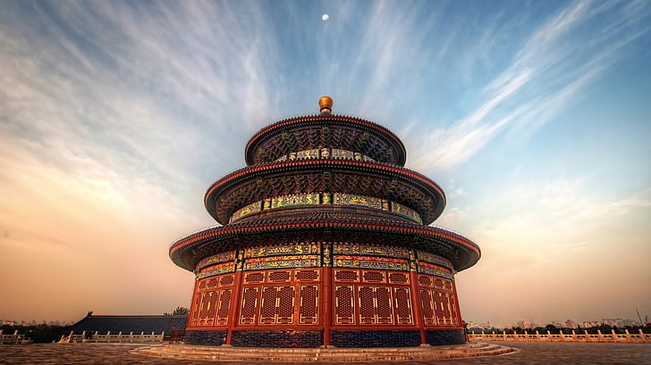

Amazing Asia!
Better to see something once than hear about it a thousand times.
A land with more than 446.27 crores of people, with nearly 2300 different languages and 44.58 million km² of area, from the shrores of Pacific Ocean to the Mediterranean Sea, from the plains and deserts of middle East to the grasslands of Karakorum, Asia has everything that one craves to travel to.Come explore with us some of the best places in Asia!



